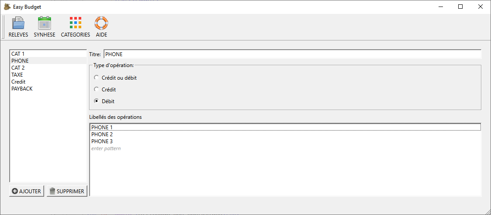

Vue des Catégories

La zone de gauche contient la liste des catégories
La zone centrale contient les paramètres de la catégorie sélectionnée dans la liste.
Ajout d'une catégorie
Cliquer sur le bouton "Ajouter" : une nouvelle catégorie est alors ajoutée à la liste
Saisir dans la zone centrale :
- Le titre de la catégorie : ce libellé apparaitra dans la vue des relevés (colonne "cat.") et dans la vue synthèse
- Le type d'opérations associé à l'opération
- La liste des mots clés contenues dans le libellé des opérations à regrouper
Pour supprimer une catégorie, la sélectionner et cliquer sur le bouton "Supprimer".
Choix du type d'opération
| Type | Description |
|---|---|
| Crédit ou débit |
La catégorie s'applique aux dépenses ou aux entrées Dans la vue synthèse, la catégorie apparaitra dans le tableau des dépenses (sommes négatives) et dans le tableau de sortie (sommes positives).
|
| Crédit | La catégorie ne s'applique qu'aux entrées (somme positive) |
| Débit | La catégorie ne s'applique qu'aux dépenses (somme négative) |
Définir les mots clés
L'association se fait en recherchant une expression dans le libellé de l'opération.
Une catégorie peut contenir plusieurs expressions.
Une opération est alors associée à la catégorie, lorsque son libéllé contient au moins une de ces expressions.
Pour ajouter une expression, il suffit de cliquer sur "saisir expression"
Pour modifier ou supprimer une expression, cliquer sur l'expression pour passer en mode édition
© 2022 Michel Janton
The documentation provided herein is licensed under the terms of the GNU Free Documentation License version 1.3 as published by the Free Software Foundation.